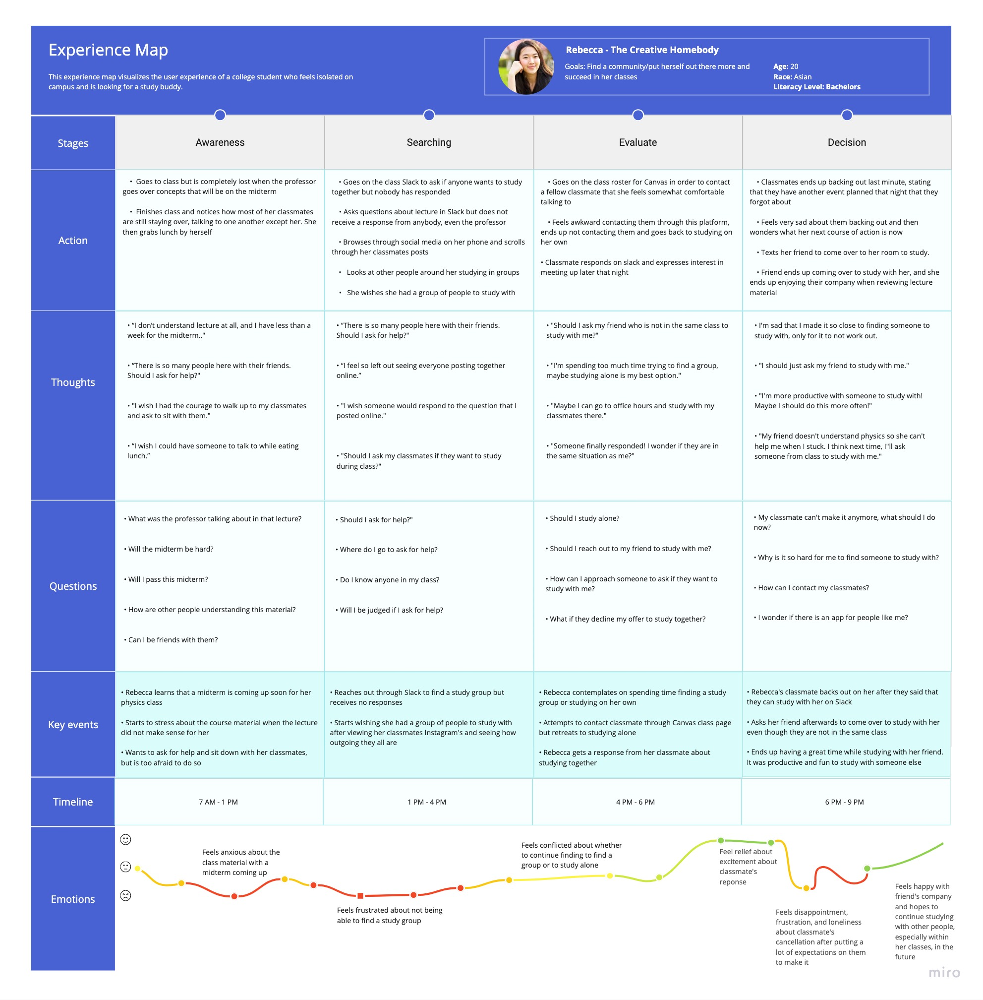

LinkPals is a conceptual mobile app designed to provide a platform for students to connect with others and find study groups. The goal is to make networking less awkward and more intentional by providing easy ways to discover students with similar academics and start meaningful conversations.
UX Designer
UX Researcher
Maia Song
Matthew Pedraja
Ha Tien Nguyen
Jan 2023 - Mar 2023
(10 weeks)
Many people find networking events overwhelming and awkward, struggling to initiate conversations or find like-minded people in large crowds. There's a need for a tool that facilitates easy, relevant connections in real-time.
Our research consisted of two different components: semi-structured interviews and a competitive analysis.
Along with our user research, we conducted a competitive analysis on a product/service related to our problem space. I analyzed Slack and my teammates explored Discord, Study Bunny: Focus Timer, and KiwiLink. Including analyzing the platform's functions, the goal of my competitive analysis was to identify and learn how the product satisfies as well as fails to meet the users' needs.
As a team, we conducted five user interviews with college students in various majors. We asked them about how they interacted with their classmates and how they formed study groups. Our research helped us get a grasp of our users and determine the problem space to begin designing.
Key insights from the interviews:Our personas integrated our findings from our research and interviews to create a representation of our users. We created the persona to show the characteristics of our users and focus our design on those personas. The scenario in the persona describes a typical occurrence for our user and gives context for the user journey map.
Key insights:We decided to focus on one of our personas, who was Rebecca, a college undergraduate student. We created a user journey map that
depicts her actions and emotions through a typical day at school. A majority of the journey map was made from our
findings, but we made some assumptions about her thoughts and feelings.
The user journey map highlighted moments of high stress/anxiety and happiness that we designed based on specific scenarios
our persona encountered, which helped us construct an avenue for our persona to discover and evaluate our platform in
solving her problem.

Link to journey map on Miro board
We created storyboards to visualize and highlight key events in the scenarios described in our design requirements and goals. The storyboards helped us discover possible design solutions within the context of our users' scenarios. This was one of the initial stages of planning our app layout and flow. The storyboards determined what key features would be relevant and necessary to include in the next step of our design process, the information architecture.
We created an information architecture diagram to organize the hierarchy of the pages in our app. The diagram links the design solutions presented in the storyboards. This layout helped us organize how our app would flow from one page to another.
The user will click on a user profile card to get to a page where the user can click on a button that adds the person as a friend. Once they have added this person, they can connect with them through chat messages to get to know the person and set up study times.
The user will navigate through the live sessions tab, looking at the various course streams. They will click on a course they are interested in watching. Once they are in the live session, they can chat with other students.
Link to the full interactive Figma prototypeAfter working through the different steps of the design process, I learned more about our users and how to foster connections between students as well as effectively working in a team to deliver a product.